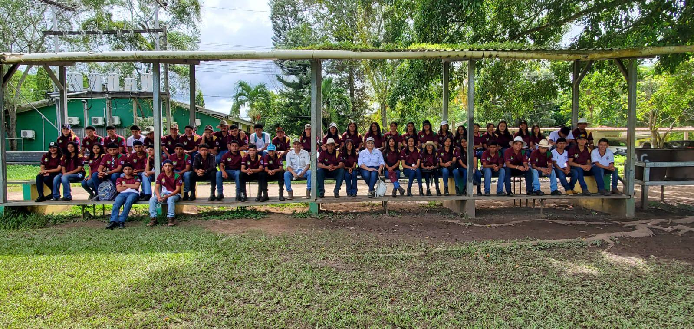
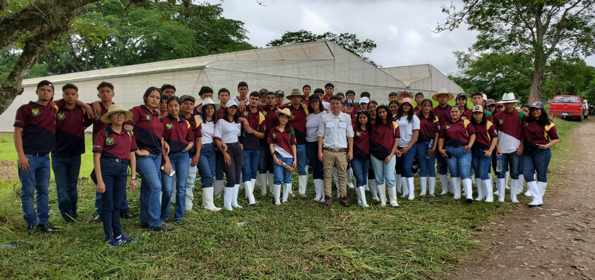
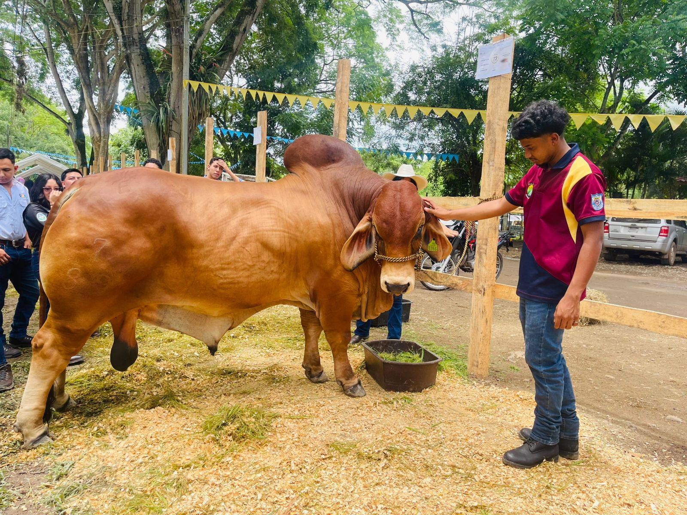

Estudiantes de Agroindustria del Instituto Técnico Francisco Miranda realizan su pasantía en áreas agrícolas
Los jóvenes del bachillerato en Agroindustria del Instituto Técnico Francisco Miranda han iniciado su etapa de pasantía profesional en distintas áreas agrícolas de la región. Esta experiencia práctica les permite aplicar los conocimientos adquiridos en el aula y fortalecer sus competencias técnicas en entornos reales de producción.
Durante su pasantía, los estudiantes están participando en procesos como el cultivo, manejo postcosecha, control de calidad y procesamiento de productos agrícolas. Las prácticas se realizan en fincas, huertos comunitarios y espacios productivos vinculados al sector agroindustrial.
Docentes supervisores y técnicos agrícolas guían a los alumnos en sus actividades diarias, brindando acompañamiento, retroalimentación y asegurando que los procesos estén alineados con los estándares de la carrera. Además, se promueve el trabajo en equipo, la sostenibilidad y el respeto por el entorno natural.
Estas pasantías forman parte del programa de formación técnica integral del Instituto Técnico Francisco Miranda, que busca preparar a los jóvenes para enfrentar los retos del mundo laboral, con herramientas prácticas, valores profesionales y compromiso con el desarrollo del país.